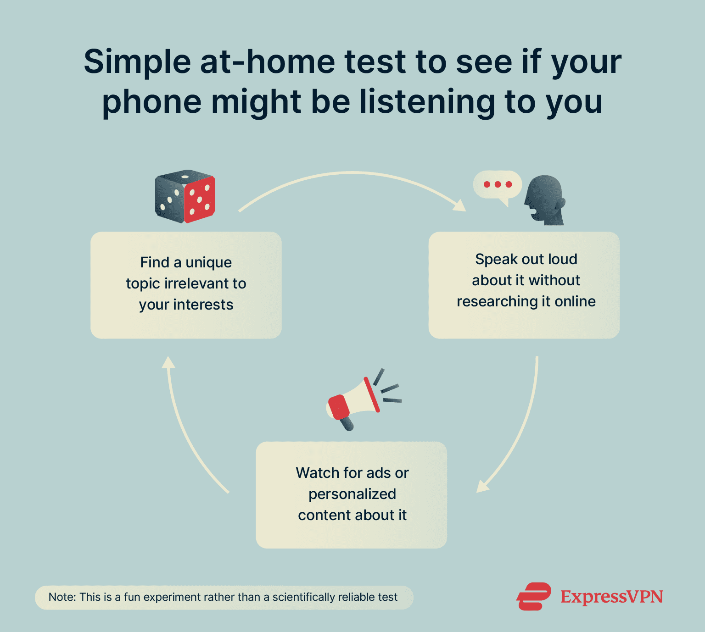

✨ 7. DISCOVERY SECTION (fun fact)
Myth: My phone is secretly listening to me
Have you ever chatted about sushi with your friends and minutes later you see many Japanese restaurant advertisements in your social media? The amazing recommendation systems often pop up advertisements that are related to our demands. Therefore, many people think that their phones are listening so as to recommend more personalized advertisements to them (BBC Bitesize, 2026).
In fact, our phones are listening but the purposes are not for advertisements. For example, the iPhones are passively listening to us for detecting the words like "Hey Siri". The voice assistants in our phone mainly help us with some hand-free tasks like searching the topic of what we asked for (BBC Bitesize, 2026). Moreover, Mosseri (2025) who is the head of Instagram indicated that the Meta apps do not listen to users' private conservations. He explained that Instagram's algorithm relies on a hybrid recommendation which includes filtering and content-based filtering recommendations.
Here is a fun way to check whether your phone is listening. Talking loud near your phone about a topic that is irrelevant to your interests. Then, you can check if there is any related content recommended in your social media (Cross et al., 2025).

The Internet Meme "Tai Po Meat Rice" went viral in Threads
Threads is a popular text based social media established in 2023. It is developed by Meta and the Instagram team so this app also connects to Instagram. The young generation is the main user of it. A post in threads which praised the meat rice of Tai Po Restaurant has become viral for a few months. At that time, posts related to this restaurant generally had one thousand to twenty thousand likes. Many people went to Yuen Long and queued up before the Tai Po Restaurant opened. How did it happen?
The algorithm of the social media Threads is mainly composed of For You feed ranking. First, the "Tai Po Meat Rice" post enters the gather Inventory of the For You feed system. Next, the system analyzes the users behaviours which are likes, replies, profile taps, time spent, and even Instagram actions (Web Team, 2026). Due to the exaggerated praising expressions of the Tai Po Meat Rice such as "The best meat rice in Asia", many users liked and replied to the post by using similar exaggerated expressions for jokes (奶茶妹, 2025). The For You feed system ranked this post as high value and kept recommending it to other users. Thus, the Tai Po restaurant meme went viral in Threads because every post about this topic has many likes and replies. Leading to a snowball effect, the algorithm showed it to more users. The Tai Po Restaurant even opened a branch after two months.
📚 References:
BBC Bitesize. (2026, January 23). Is my phone listening to me? BBC Bitesize. https://www.bbc.co.uk/bitesize/articles/z6dmkhv
Mosseri, A. (2025). Instagram post. https://www.instagram.com/p/DPTrPAGDbZv/?img_index=2
Cross, T. (2026, February 27). Is my phone listening to me? A step-by-step privacy check. ExpressVPN. https://www.expressvpn.com/blog/is-my-phone-listening-to-me/
Web Team. (2026, March 4). How does the Threads algorithm work in 2026? QuickFrame. https://quickframe.mountain.com/blog/how-does-the-threads-algorithm-work/
奶茶妹. (2025, December 11). 元朗大寮冰室肉餅飯Threads爆紅之謎 潮文被狂推竟同城大有關? 香港01. https://www.hk01.com/